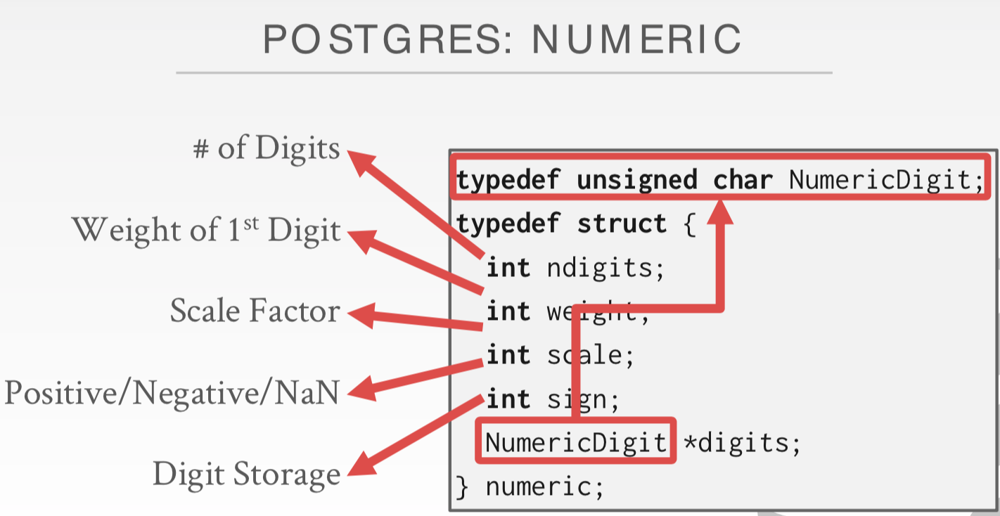
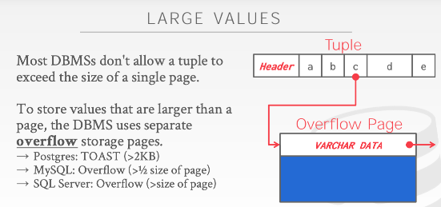
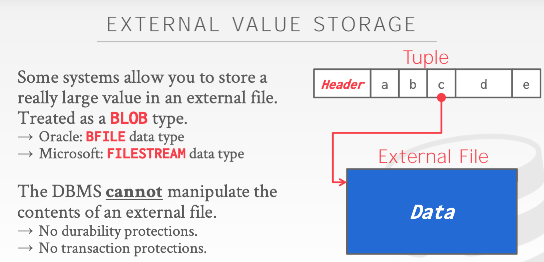
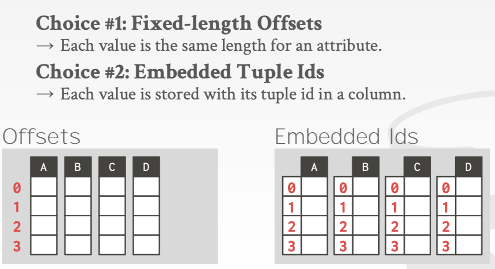

Database Storage II
约 2380 个字 预计阅读时间 8 分钟
我们希望构建面向磁盘的DBMS。
我们之前说过，数据库由一系列page表示；接着我们讨论了如何将heap文件拆分为page；然后讲了page中组织tuple的常用方法slotted-pages；最后是tuple中布局。
数据表示¶
Tuple本质上就是 byte 数组。DBMS的任务就是将那些bytes翻译成有意义的属性值。数据表示模式 sehema 是DBMS存储值的字节的方式。DBMS的 catalogs 中包含着数据表的 schema 和元组的 layout（类似数据表的说明书）。
元组中可以存储 五种主要类型 ：整数、可变精度数、定点精度数、可变长度值和日期/时间。
IEEE-754是一种行业标准，它是一种用来表示数字和CPU的规范
-
整型：
- 大多数 DBMS 使用 IEEE-754 标准指定的“本地”C/C++类型存储整数。值的长度固定。
- 示例：INTEGER、BIGINT、SMALLINT、TINYINT
-
可变精度类型：
- 使用 IEEE-754 标准指定的“本地”C/ C++类型的不精确、可变精度的数字类型。值的长度固定。
- 可变精度数比任意精度数（固定精度数的精度是任意的，即它的范围无法确定）计算更快，因为CPU可以直接对它们执行指令。但存在舍入误差。
- 示例：FLOAT、REAL/DOUBLE
- 固定精度类型：
 - 这些是具有任意精度和比例的数字数据类型。它们通常以精确的、可变长度的二进制表示形式存储，并 带有额外的元数据 ，这些元数据将告诉系统小数应该在哪里。所以 不存在舍入误差，但计算慢 ，因为计算需要更多的指令处理。（像 VARCHAR 但不是 string）
- 若不想因精度问题丢失数据，就使用固定精度类型，但DBMS为获得这种准确性付出了性能代价。
- 示例：NUMERIC、 DECIMAL
-
可变长度类型：
- 任意长度的字节数组。
- 有一个 header 跟踪字符串的长度（若是一个非常大的值，后面还跟一个checksum），使它容易跳转到下一个值。后面跟字节序列。
- 大多数 DBMS 不允许 tuple 超过单个 page 的大小，所以他们在 overflow page 上写入值，让 tuple 包含对该 page 的指针。（这就像是另一个record id，通过page number和slot id来告诉我们该去哪里找到我们需要的那个数据）（一般这些overflow page是只读或几乎用于读，很少往上面写东西）
 -
除了将数据直接保存在数据库中，还有另一种方案—— 外部存储 （Exturnal File），基本思路是：不将该属性的数据保存在tuple内部，而是往里面保存一个指针或者是一个文件路径，它们指向能找到该数据的本地磁盘，或者网络存储，亦或是某些外部存储设备。
将这些大值存储在外部文件 External File 中，然后 tuple 将包含指向该文件的指针。🌰 如果我们的数据库存储照片信息，我们可以将照片存储在外部文件中，而不是让它们占用DBMS中的大量空间。缺点：DBMS无法操作该文件的内容。
 -
示例：VARCHAR、VARBINARY、TEXT、BLOB
-
日期和时间类型：
- 通常，这些表示为自 unix 时代（1970年1月1日）以来的微秒/毫秒/秒数。
- 示例：TIME、DATE、TIMESTAMP
系统目录 System Catalogs：
DBMS将数据库的元数据存储在内部的 catalog 中，包括表名、索引、视图、用户权限等信息。
大多数DBMS将它们的目录存储在它们自己的表所使用的格式中。通过 STANDARD INFORMATION_SCHEMAAPI将目录暴露出来。
工作负载 workload¶
目前根据不同的应用场景和数据读写特征，大致将数据库划分为👇两种。不同workload 的数据库的存储方式也存在很大差异。
OLTP：联机事务处理。从外界拿到数据后放入数据库系统；查询多为读取/更新一小部分数据，不断重复相同操作。
- 快速、短时间运行的操作
- 查询在同一时间对单个实体进行操作
- 写比读多
- 重复操作
- 通常是人们首先构建的应用程序
- 示例：Amazon的用户调用。他们可以添加购物车，购买商品，但这些行为只会影响他们的账户。 BigTable、Cassandra、MongoDB、Radis以及其他数据库系统。（Cassandra、MongoDB、Radis是NoSQL数据库系统）
OLAP：联机分析处理。 分析通过OLTP获取的大量数据，从中推断出新信息。 （被称为数据科学，从已有数据中推断出新数据）
- 长时间运行，更复杂的查询
- 读取数据库的大部分内容
- 探索查询
- 从OLTP端收集的数据中获取新数据
- 举例：计算这些地理位置在一个月内购买最多的五件商品。 Hadoop
HTAP：混合事务分析处理。将OLTP与OLAP相结合。
可见 OLTP 擅长简单的查询，但会做大量写入操作；OLAP 会做大量读取操作，但更复杂。HTAP 是二者的结合，既要获取数据又要对数据进行分析。
存储模型 storge model¶
在页面中存储元组有不同的方法。到目前为止，我们已经假设了n元存储模型。
n元存储模型（NSM）
DBMS连续存储单个元组的所有属性，因此NSM也被称为 行存储。
适合 OLTP 工作负载，因为在 OLTP 工作负载中，事务往往只操作单个实体并插入大量工作负载。它是理想的，因为它只需要一次获取就可以获得单个元组的所有属性。
- 优点
- 快速插入、更新和删除。
- 适用于需要整个元组的查询，以及只需要获取几条数据的点查询。
- 缺点
- 不适合扫描表的大部分或属性的子集。因为它获取了处理查询不需要的数据，从而污染了缓冲池。
- 组织NSM数据库的两种方式：
- 堆组织表：元组存储在称为堆的块中，堆并不一定定义顺序。
- 索引组织表：元组存储在主键索引本身，但不同于聚集索引。
分解存储模型（DSM）
DBMS将所有元组的单个属性（列）连续存储在一个数据块中 。也称为 列存储。
适合 OLAP 工作负载，在这种工作负载中，只读查询对表属性的子集执行大规模扫描。
-
优点
- 减少查询执行过程中浪费的I/O工作量，因为DBMS只读取它需要的查询数据。
- 支持更好的压缩，因为同一个属性的所有值都是连续存储的。
-
缺点
- 由于元组拆分/拼接，点查询、插入、更新和删除的速度很慢。
-
当使用列存储时，要将元组放回一起，有以下两种方法：
 - 固定长度偏移：首先假设所有属性都是固定长度的。然后，当系统需要特定元组的属性时，它知道如何跳转到文件中的那个位置。为了适应可变长度字段（不同DBMS处理方法不同），系统可以填充它们，使它们都是相同的长度，或者您可以使用一个字典，它接受一个固定大小的整数，并将整数映射到值。
- 嵌入的Tuple id：对于列中的每个属性，将 Tuple id 存储在其中。系统还需要额外的信息来告诉它如何跳转到每个具有该 id 的属性。
Warning
大多数 DBMS 使用第一种方法；第二种方法比较糟糕，会产生大量开销，现在应该没人用。
行存储通常更适合OLTP，而列存储则更适合OLAP。
总结¶
介绍了元组中可存储的五种主要类型：整数、可变精度数、定点精度数、可变长度值和日期/时间。
介绍了 workload：
- OLTP ：在线事务处理。特征：读写简单，写比读多，通常是读/写一小部分数据，并且事务可保证数据的一致性。
- OLAP ：在线分析处理。特征：查询复杂，需要读取大批量数据进行统计分析。
- HTAP ：混合事务分析处理。将 OLTP 与 OLAP 相结合。
介绍了不同 workload 下数据库的存储方式。
-
行存储 是最常见、符合直观思维的存储模式，将不同属性的数据一行行的组织起来，并且存储到 page 当中。更适合 OLTP 数据库。
- 方便快速插入/更新/删除和点查询，但不适合扫描表的大部分或属性的子集。
- 数据库组织形式：堆组织表、索引组织表。
-
列存储 将表中一个列的数据存到 page 中。由于具有相同属性的数据，会更可能有类似的特征，所以这样的数据组织方式更适合压缩，节省存储空间。更适合 OLAP 数据库。
- 方便大批量扫描数据，支持更好的压缩，但插入/更新/删除和点查询速度都很慢。
- 数据库组织形式：固定长度偏移 (更常用)、嵌入的 tuple id (开销很大，没人用)。
颜色主题调整
评论区~
有用的话请给我个赞和 star => 快来跟我聊天~
快来跟我聊天~